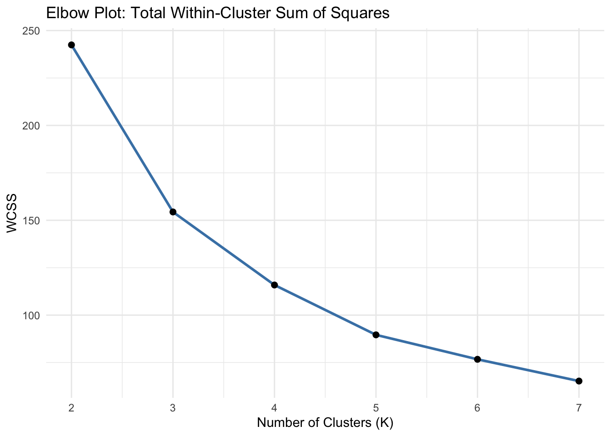
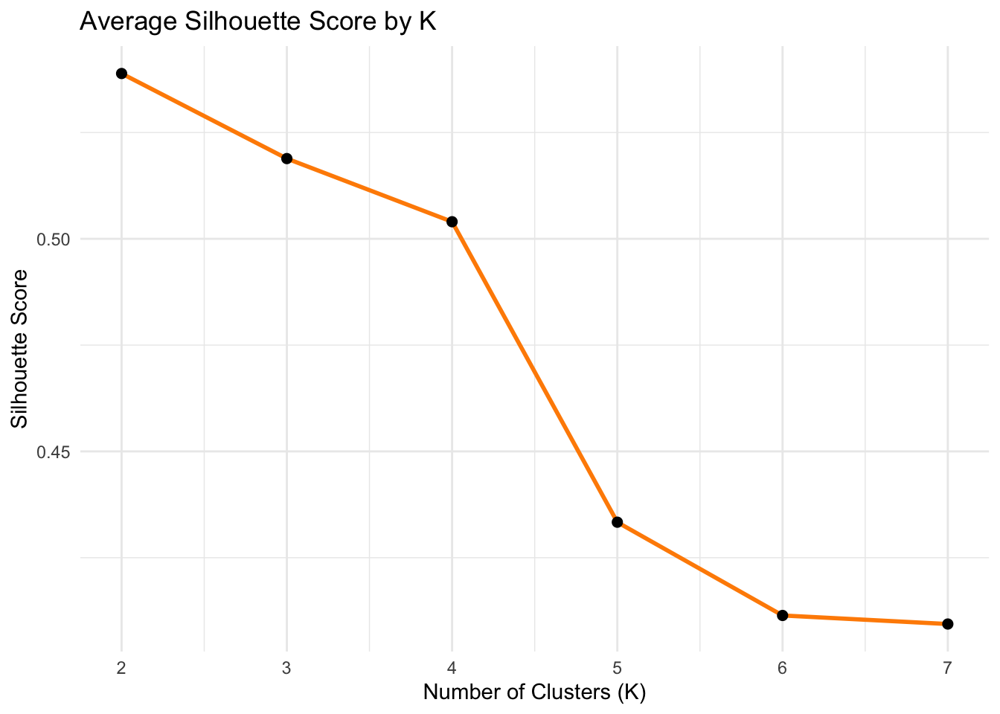
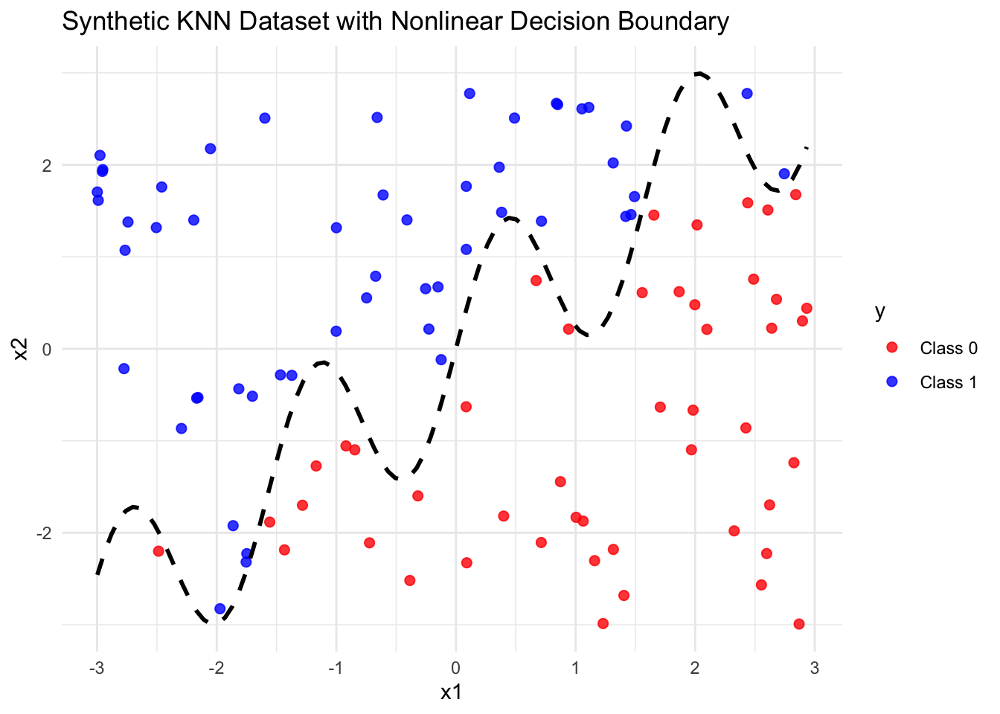
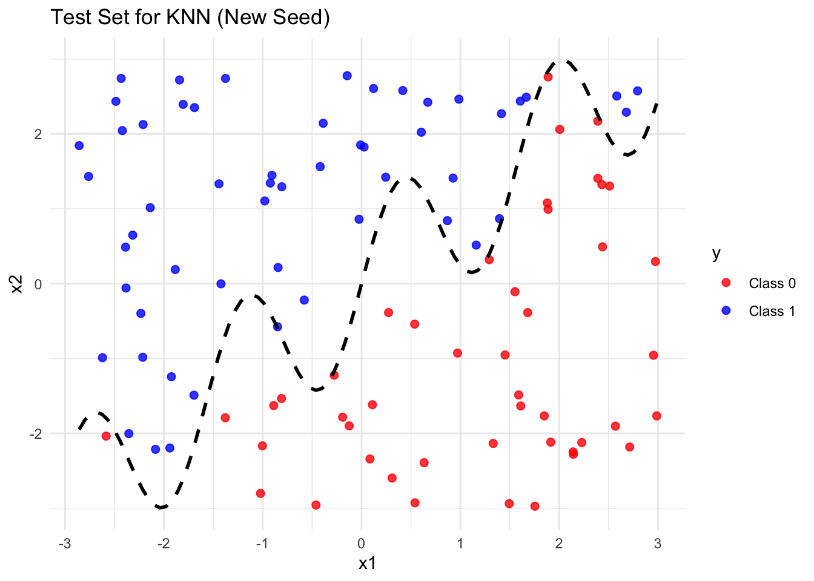
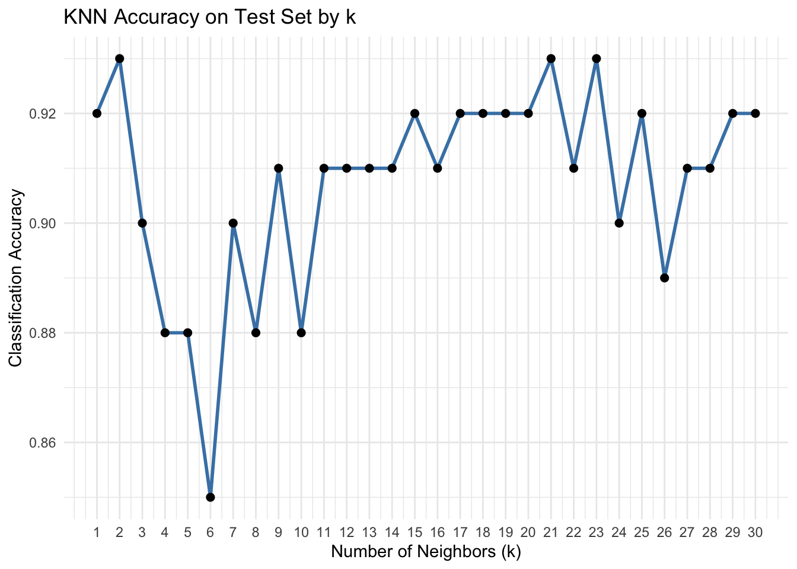

Clustering and Classification: K-Means and K-Nearest Neighbors
Author
Yuzhi Tao
Published
June 12, 2025
Clustering with K-Means from Scratch
In this section, I will implement the K-Means clustering algorithm from scratch and apply it to the Palmer Penguins dataset. The clustering is based on two biologically meaningful features: bill_length_mm and flipper_length_mm. These measurements often distinguish penguin species and allow for intuitive cluster visualization. The goal is to better understand how the algorithm operates step by step and compare its output to the built-in implementation in R.
Load and Prepare the Data
We start by loading the Palmer Penguins dataset and selecting only the two relevant features. Because K-Means uses Euclidean distance, we standardize both features to ensure fair weighting. We also drop any rows with missing values.
Note
# Load necessary librarieslibrary(tidyverse)
Warning: package 'ggplot2' was built under R version 4.3.3
Warning: package 'tidyr' was built under R version 4.3.2
Warning: package 'purrr' was built under R version 4.3.3
Warning: package 'lubridate' was built under R version 4.3.3
── Attaching core tidyverse packages ──────────────────────── tidyverse 2.0.0 ──
✔ dplyr 1.1.4 ✔ readr 2.1.5
✔ forcats 1.0.0 ✔ stringr 1.5.1
✔ ggplot2 3.5.2 ✔ tibble 3.2.1
✔ lubridate 1.9.4 ✔ tidyr 1.3.1
✔ purrr 1.0.4
── Conflicts ────────────────────────────────────────── tidyverse_conflicts() ──
✖ dplyr::filter() masks stats::filter()
✖ dplyr::lag() masks stats::lag()
ℹ Use the conflicted package (<http://conflicted.r-lib.org/>) to force all conflicts to become errors
# Load the datasetpenguins <-read_csv("palmer_penguins.csv")
Rows: 333 Columns: 8
── Column specification ────────────────────────────────────────────────────────
Delimiter: ","
chr (3): species, island, sex
dbl (5): bill_length_mm, bill_depth_mm, flipper_length_mm, body_mass_g, year
ℹ Use `spec()` to retrieve the full column specification for this data.
ℹ Specify the column types or set `show_col_types = FALSE` to quiet this message.
# Filter only complete rows for bill length and flipper lengthpenguins_filtered <- penguins %>%select(bill_length_mm, flipper_length_mm) %>%drop_na()# Scale the data for K-meanspenguins_scaled <-scale(penguins_filtered)
K-Means from scratch, saving every iteration
To understand not just the final result but the entire learning process, I wrote a custom K-Means function that logs every iteration. This way, I can track how both cluster assignments and centroid positions evolve over time. Below is the implementation, which runs for a maximum of 100 iterations and stores the full trace needed to build step-by-step plots.
Now that the custom K-Means function is ready and equipped to log each iteration, I can apply it to the dataset. This run will generate a full trace of how the clusters and centroids evolve over time, which will be critical for visualizing the step-by-step behavior of the algorithm.
trace <-kmeans_custom_trace(penguins_scaled, k =3, max_iter =100)# helper: build tidy data for plotting iterationsplot_data <-map_dfr(trace, function(step){as_tibble(penguins_scaled) %>%mutate(cluster =factor(step$clusters),iteration = step$iteration)})centroid_data <-map_dfr(trace, function(step){ step$centroids %>%set_names(c("bill_length_mm", "flipper_length_mm")) %>%mutate(cluster =factor(1:nrow(.)),iteration = step$iteration)})
(A) Faceted plot of first 12 iterations
To make the iterative learning process visible, I extract the cluster assignments and centroid locations from each iteration and reshape them into a tidy format. This enables plotting the progression of the algorithm across time, using one panel per iteration to clearly show how the clusters stabilize.
To visualize how the algorithm progresses, I plot the first 12 iterations using a faceted layout. Each panel represents one iteration, showing how the centroid positions (marked by ✚) and cluster assignments shift over time. This provides a clear, frame-by-frame view of how K-Means converges.
(B) Final custom clustering (iteration 100)
Once the full trace is generated, I extract the final cluster assignments from the last iteration. Plotting these on the original (unscaled) feature space allows us to interpret the results in real-world units and assess how well the custom algorithm separated the penguins into meaningful groups.
After 100 iterations, the algorithm reaches a stable solution. To examine the final result, I assign each observation to its final cluster and plot the groupings using the original (unscaled) bill and flipper length measurements. This gives a clear view of how the clusters align with the natural structure of the data.
(C) Built-in kmeans for comparison
To benchmark my results, I also applied R’s built-in kmeans() function. This function includes useful defaults, such as multiple random starts (nstart = 20), to help the algorithm converge to a more stable solution.
By comparing the built-in output with my custom implementation, I can verify that my logic is correct and observe how slight differences in initialization or convergence criteria might affect the final cluster assignments.
Evaluating the Optimal Number of Clusters
While the final clustering result gives us a visual idea of structure, it doesn’t answer a crucial question: how many clusters is the right number?
To evaluate this more formally, I now compute two common model selection metrics: the within-cluster sum of squares (WCSS) and the average silhouette score, both calculated across a range of cluster counts from K=2 to K=7. These scores help quantify the balance between model complexity and clustering quality.
library(cluster)install.packages("factoextra")
Installing package into '/Users/mac/Library/R/x86_64/4.3/library'
(as 'lib' is unspecified)
The downloaded binary packages are in
/var/folders/zb/v36xlhtj5dj8kdn73yhxqf5c0000gn/T//RtmpKwKKOY/downloaded_packages
library(factoextra)
Welcome! Want to learn more? See two factoextra-related books at https://goo.gl/ve3WBa
# Store resultsk_values <-2:7wcss_vec <-numeric(length(k_values))sil_vec <-numeric(length(k_values))# Loop through different K valuesfor (i inseq_along(k_values)) { k <- k_values[i] kfit <-kmeans(penguins_scaled, centers = k, nstart =20)# Total within-cluster sum of squares wcss_vec[i] <- kfit$tot.withinss# Silhouette score sil <-silhouette(kfit$cluster, dist(penguins_scaled)) sil_vec[i] <-mean(sil[, 3]) # average silhouette width}# Convert to dataframe for plottingmetrics_df <-tibble(K = k_values,WCSS = wcss_vec,Silhouette = sil_vec)# Plot WCSS ("elbow method")ggplot(metrics_df, aes(x = K, y = WCSS)) +geom_line(color ="steelblue", size =1) +geom_point(size =2) +theme_minimal() +labs(title ="Elbow Plot: Total Within-Cluster Sum of Squares",x ="Number of Clusters (K)",y ="WCSS")
Warning: Using `size` aesthetic for lines was deprecated in ggplot2 3.4.0.
ℹ Please use `linewidth` instead.

# Plot silhouette scoresggplot(metrics_df, aes(x = K, y = Silhouette)) +geom_line(color ="darkorange", size =1) +geom_point(size =2) +theme_minimal() +labs(title ="Average Silhouette Score by K",x ="Number of Clusters (K)",y ="Silhouette Score")

Both the elbow plot and silhouette score suggest that K = 3 is the most appropriate number of.
In the elbow plot, the sharpest drop in within-cluster sum of squares (WCSS) occurs between K = 2 and K = 3, after which the curve begins to flatten. This indicates diminishing returns from adding more clusters—a classic sign that we’ve reached the “elbow”.
In the silhouette plot, the highest average silhouette score is also achieved at K = 2, but the score for K = 3 remains relatively high and is more consistent with the visual structure seen earlier in the scatterplots. Because K = 2 may under-cluster meaningful subgroups, and K = 3 provides a balance between compactness and interpretability, I select K = 3 as the right number of clusters for this data.
Classifying with K-Nearest Neighbors on a Nonlinear Boundary
Generating a Synthetic Dataset for KNN Classification
After experimenting with K-Means for unsupervised segmentation, I now turn to a supervised classification task using K-Nearest Neighbors on a synthetic dataset.
To explore how K-Nearest Neighbors (KNN) handles non-linear classification problems, I start by generating a synthetic dataset. The outcome variable y is binary and determined by whether x2 lies above or below a wiggly decision boundary defined by a sine function applied to x1. This setup allows for clear visualization of how the KNN algorithm draws boundaries in complex spaces.
# gen data -----set.seed(42)n <-100x1 <-runif(n, -3, 3)x2 <-runif(n, -3, 3)x <-cbind(x1, x2)# define a wiggly boundaryboundary <-sin(4*x1) + x1y <-ifelse(x2 > boundary, 1, 0) |>as.factor()dat <-data.frame(x1 = x1, x2 = x2, y = y)
Before applying KNN, it’s important to visually understand the structure of the data. I plot x1 on the horizontal axis and x2 on the vertical axis, with each point colored by the binary outcome y. Since the classification boundary is based on a sine function, I also draw the underlying “wiggly” boundary curve to better understand what the model is trying to learn.
# Plot the datasetggplot(dat, aes(x = x1, y = x2, color = y)) +geom_point(size =2, alpha =0.8) +stat_function(fun =function(x) sin(4* x) + x, color ="black", linetype ="dashed", linewidth =1) +labs(title ="Synthetic KNN Dataset with Nonlinear Decision Boundary",x ="x1", y ="x2") +scale_color_manual(values =c("red", "blue"), labels =c("Class 0", "Class 1")) +theme_minimal()

To evaluate the generalization performance of the KNN model, I generate a separate test dataset using the same logic as the training data—uniform sampling in the same x1, x2 range and classification based on the same sine-based boundary. To ensure the test set is independent, I use a different random seed.
# Generate test data with a different seedset.seed(2025)n_test <-100x1_test <-runif(n_test, -3, 3)x2_test <-runif(n_test, -3, 3)x_test <-cbind(x1_test, x2_test)# Define the same sine-based boundaryboundary_test <-sin(4* x1_test) + x1_testy_test <-ifelse(x2_test > boundary_test, 1, 0) |>as.factor()# Create a test dataframedat_test <-data.frame(x1 = x1_test, x2 = x2_test, y = y_test)# Optional: visualize test dataggplot(dat_test, aes(x = x1, y = x2, color = y)) +geom_point(size =2, alpha =0.8) +stat_function(fun =function(x) sin(4* x) + x,color ="black", linetype ="dashed", linewidth =1) +labs(title ="Test Set for KNN (New Seed)", x ="x1", y ="x2") +scale_color_manual(values =c("red", "blue"), labels =c("Class 0", "Class 1")) +theme_minimal()

With both training and test sets prepared, I now implement the K-Nearest Neighbors (KNN) algorithm from scratch. For each point in the test set, the algorithm finds the k closest points from the training data and assigns the most common label among them. To confirm correctness, I also compare my results against the built-in class::knn() function in R.
## 1. Prepare scaled featuresx_train_raw <- dat[, c("x1", "x2")]x_test_raw <- dat_test[, c("x1", "x2")]# Standardise using training set statsx_train <-scale(x_train_raw)x_test <-scale( x_test_raw,center =attr(x_train, "scaled:center"),scale =attr(x_train, "scaled:scale"))y_train <- dat$yy_test <- dat_test$y # ground-truth labels## 2. Hand-coded KNN function (Euclidean distance)knn_predict <-function(train_x, train_y, test_x, k =5) { preds <-vector("character", nrow(test_x))for (i inseq_len(nrow(test_x))) { dists <-sqrt(rowSums((t(t(train_x) - test_x[i, ]))^2)) idx <-order(dists)[1:k] preds[i] <-names(which.max(table(train_y[idx]))) }factor(preds, levels =levels(train_y))}## 3. Run manual KNNpred_manual <-knn_predict(train_x = x_train, train_y = y_train,test_x = x_test, k =5)## 4. Run built-in KNN for verificationlibrary(class)pred_builtin <-knn(train = x_train, test = x_test, cl = y_train, k =5)## 5. Accuracy comparisonmean(pred_manual == y_test)
[1] 0.88
mean(pred_builtin == y_test)
[1] 0.88
all(pred_manual == pred_builtin) # TRUE if predictions identical
[1] TRUE
Both the hand-coded routine and R’s built-in knn() achieved identical accuracy of 88 %, and their predictions matched point-for-point. This confirms that manual KNN implementation performs on par with the standard library function.
Exploring K Across a Range of Neighbors
KNN’s performance depends heavily on the choice of k. A small k can overfit noisy patterns, while a large k can oversmooth the decision boundary. To find a sensible value, I evaluate classification accuracy for every integer k = 1 … 30 and then plot the results.
k_vals <-1:30acc_vec <-numeric(length(k_vals))for (i inseq_along(k_vals)) { k <- k_vals[i]# manual KNN using previously defined helper pred_i <-knn_predict(train_x = x_train,train_y = y_train,test_x = x_test,k = k) acc_vec[i] <-mean(pred_i == y_test)}# Combine into a data frame for plottingknn_perf <-tibble(k = k_vals, accuracy = acc_vec)# Plot accuracy vs. kggplot(knn_perf, aes(x = k, y = accuracy)) +geom_line(color ="steelblue", linewidth =1) +geom_point(size =2) +scale_x_continuous(breaks = k_vals) +theme_minimal() +labs(title ="KNN Accuracy on Test Set by k",x ="Number of Neighbors (k)",y ="Classification Accuracy")

The accuracy curve shows a clear peak at k = 2, where classification accuracy reaches about 93 %, the highest across all tested values. After peaking at k = 2, the accuracy drops slightly when using k = 3, 4, or 5. Although it improves again for larger values of k, the accuracy never gets higher than it was at k = 2. This means that while other values still perform reasonably well, none of them match the performance of k = 2 on this test set. Therefore, the plot suggests that k = 2 is the optimal number of neighbors for this dataset, striking the best balance between capturing the wiggly decision boundary and avoiding over-smoothing.